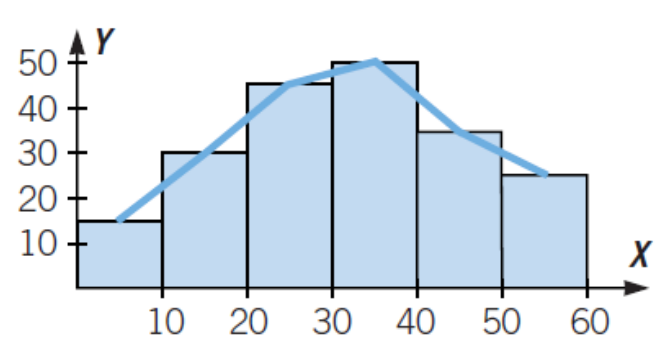

Estadística
Estudio estadístico: conceptos
El estudio estadístico es el proceso mediante el cual se recogen, organizan y analizan datos para obtener conclusiones. Los estudios pueden realizarse sobre toda una población o una muestra de ella.
Población y muestra
La población es el conjunto total de elementos sobre los que se realiza el estudio. La muestra es un subconjunto de la población que se selecciona para ser estudiada. Los resultados obtenidos de la muestra se utilizan para hacer inferencias sobre toda la población.
1 Para los siguientes casos indica cuál es la población, si es más conveniente estudiar la población o tomar una muestra y, en este último caso, cómo la escogerías:
- La talla de calzado que usan los alumnos de 3º ESO de un instituto.
- La longitud de los tornillos que, ininterrumpidamente, produce una máquina.
- La estatura de todos los turistas en un año.
- El peso de un grupo de cinco amigos.
Variables estadísticas
Variables estadísticas
Las variables estadísticas son las características o cualidades que se estudian en una población. Pueden ser cualitativas o cuantitativas, dependiendo de si representan atributos o cantidades.
Tipos de variables estadísticas
Las variables cuantitativas pueden ser discretas (valores enteros, como el número de hermanos) o continuas (pueden tomar cualquier valor dentro de un rango, como la altura). Las cualitativas pueden ser ordinales (con un orden) o nominales (sin orden).
2 Indica si las siguientes variables estadísticas son cualitativas o cuantitativas:
- Comida favorita.
- Profesión que te gusta.
- Número de goles marcados por tu equipo.
- Número de alumnos de tu instituto.
3 De las siguientes variables cuantitativas, indica cuáles son discretas y cuáles continuas:
- Número de hijos de 50 familias.
- Número de acciones vendidas en la Bolsa.
- Temperaturas registradas en Casablanca.
- Duración de un automóvil.
4 Clasifica las siguientes variables en cualitativas y cuantitativas discretas o continuas:
- La nacionalidad de una persona.
- Litros de agua contenidos en un depósito.
- Número de libros en un estante de librería.
- Puntos al lanzar dos dados.
Tabla de frecuencias
Frecuencias absoluta y frecuencia absoluta acumulada
La frecuencia absoluta es el número de veces que aparece un valor en un conjunto de datos. La frecuencia absoluta acumulada es la suma de las frecuencias absolutas hasta un valor determinado.
Frecuencia relativa y frecuencia relativa acumulada
La frecuencia relativa es el cociente entre la frecuencia absoluta de un valor y el total de datos. La frecuencia relativa acumulada es la suma de las frecuencias relativas hasta un valor determinado.
5 Construye la tabla de frecuencia de los siguientes conjuntos de datos:
-
El color de pelo (M = moreno, R = rubio, P = pelirrojo) de 30
personas:
M R P M M M M R R P P M M M M
M M P R R R P M M M M R M M M.
6 Para los siguientes conjuntos de datos, indica qué tipo de variable estadística es y construye la tabla de frecuencias:
- El número de horas diarias que trabajan con el ordenador 30 personas es: 3, 4, 0, 5, 5, 3, 4, 5, 0, 2, 2, 5, 3, 2, 0, 1, 2, 2, 1, 2, 0, 3, 1, 2, 1, 1, 2, 1, 4, 3.
Variables continuas: clases y marcas de clase
Cuando las variables son continuas, es común agrupar los datos en clases o intervalos. La marca de clase es el punto medio de cada intervalo y se utiliza para representar el valor promedio de los datos en ese intervalo.
7 Completa la siguiente tabla de frecuencias de los resultados de un test de inteligencia realizado a 20 personas, agrupando los datos en los intervalos indicados:
65, 68, 72, 73, 75, 80, 89, 92, 93, 94, 97, 100, 100, 101, 101, 102, 113, 114, 121, 121
| [60, 70) | [70, 80) | [80, 90) | [90, 100) | [100, 110) | [110, 120) | [120, 130) | |
| fi |
8 Para los siguientes conjuntos de datos, agrupa en intervalos, calcula la marca de clase y completa la tabla de frecuencias:
- Los pesos (en kg) de 24 personas: 68,5; 34,2; 47,5; 39,2; 47,3; 79,2; 46,5; 58,3; 62,5; 58,7; 80; 63,4; 58,6; 50,2; 60,5; 70,8; 30,5; 42,7; 59,4; 39,3; 48,6; 56,8; 72; 60.
- Estatura en cm de 28 jóvenes: 155, 178, 170, 165, 173, 168, 160, 166, 176, 169, 158, 170, 179, 161, 164, 156, 170, 171, 167, 151, 163, 158, 164, 174, 176, 164, 154, 157.
Medidas estadísticas: medidas de posición
Las medidas de posición proporcionan información resumida de la variable objeto de estudio
Medidas de posición central: media, mediana y moda
Las medidas de centralización nos ayudan a resumir un conjunto de datos en un solo valor que represente el centro o la tendencia central de los datos.
Media
La media aritmética es el valor promedio de un conjunto de datos. Se calcula sumando todos los valores y dividiendo entre el número total de valores. La fórmula es:
\(\overline{x} = \frac{\sum_{i=1}^{n} x_i \cdot f_i}{n}\)
Mediana
La mediana es el valor que deja el mismo número de datos por encima y por debajo de él cuando los datos están ordenados.
Si hay un número impar de datos, la mediana es el valor central. Si hay un número par de datos, la mediana es la media de los dos valores centrales.
Moda
La moda es el valor que más se repite en un conjunto de datos.
Es posible que un conjunto de datos tenga más de una moda (si varios valores se repiten el mismo número de veces) o que no tenga moda (si ningún valor se repite).
9 Para los siguientes conjuntos de datos, calcula la media, mediana y moda:
- Número de suspensos de 15 alumnos: 0, 0, 0, 1, 1, 1, 1, 2, 2, 3, 3, 4, 4, 4, 4.
- Número de horas de estudio de 12 alumnos en una semana: 2, 2, 3, 3, 3, 4, 4, 4, 5, 5, 6, 6.
Medidas de posición no central: cuartiles
10.a Para el siguiente conjunto de datos, completa la tabla de frecuencias, calcula la media, mediana, moda y los cuartiles:
Notas de una oposición en la que se han presentado 200 personas:
| 3 | 4 | 5 | 6 | 7 | 8 | 9 | 10 | |
| fi | 6 | 25 | 34 | 42 | 50 | 24 | 13 | 6 |
10.b Para el siguiente conjunto de datos, completa la tabla de frecuencias, calcula la media, mediana, moda y los cuartiles:
Número de libros leídos durante el último año por un grupo de estudiantes:
| 0 | 1 | 2 | 3 | 4 | 5 | 6 | |
| fi | 7 | 18 | 35 | 42 | 28 | 15 | 5 |
11 Para el siguiente conjunto de datos dado en intervalos, completa la tabla de frecuencias, calcula la media, mediana, moda y los cuartiles usando las marcas de clase:
Tiempo diario (en minutos) dedicado al uso del teléfono móvil por un grupo de adolescentes:
| [0, 30) | [30, 60) | [60, 90) | [90, 120) | [120, 150) | [150, 180) | |
| fi | 8 | 16 | 29 | 37 | 22 | 8 |
Medidas estadísticas: medidas de dispersión
Las medidas de dispersión estudian la separación existente entre los valores que toma la variable.
Medidas de dispersión absolutas: rango y rango intercuartílico
El rango es la diferencia entre el valor más alto y el más bajo.
El rango intercuartílico es la diferencia entre el cuarto tercer y primer cuartil.
Medidas de dispersión absolutas: desviación típica y varianza
\( \sigma^2 = \frac{\sum_i (X_i - \overline{x})^2 \cdot f_i}{N} \)
12 Para los siguientes conjuntos de datos, calcula su rango y su rango intercuartílico:
- Número de libros leídos durante el verano por 15 estudiantes: 2, 2, 3, 3, 3, 4, 4, 4, 5, 5, 5, 6, 6, 7, 7.
Medidas de dispersión relativas: Coeficiente de variación
Se trata de una medida adimensional y sin unidades que nos permite comparar la dispersión de dos variables.
\(C_v = \frac{\sigma}{|\overline{x}|}\)
15.a Para el siguiente conjunto de datos calcula su coeficiente de variación:
Número de canciones escuchadas al día por 15 estudiantes: 1, 1, 2, 2, 2, 3, 3, 3, 4, 4, 4, 5, 5, 6, 6.
15.c Para el siguiente conjunto de datos calcula su coeficiente de variación:
Tiempo (en minutos) dedicado diariamente a la lectura por un grupo de adultos:
| [0, 15) | [15, 30) | [30, 45) | [45, 60) | [60, 75) | [75, 90) | |
| fi | 7 | 15 | 28 | 34 | 20 | 6 |
16 La anotación de dos jugadores de baloncesto en los últimos cinco partidos ha sido para Pedro 12, 15, 14, 13 y 16 y para Uxía 10, 18, 11, 17 y 15. Calcula la media y la varianza en los dos casos. ¿En cuál de los dos jugadores hay mayor dispersión?
18 En los siguientes pares de conjuntos de datos, calcula el coeficiente de variación e indica cuál de los elementos de cada pareja tiene menos dispersión:
-
Dos grupos de estudiantes han realizado una prueba de
velocidad lectora:
Grupo Media Desviación típica A 120 palabras/minuto 12 B 180 palabras/minuto 18 -
Resultados de dos competiciones deportivas:
Competición Media Desviación típica Carrera A 10 s 1 s Carrera B 100 s 5 s
Gráficos estadísticos
Diagrama de barras
19 Para el siguiente conjunto de datos, realiza el diagrama de barras y el polígono de frecuencias. Calcula también los grados del diagrama de sectores:
Número de películas vistas durante el último mes por un grupo de personas:
| 0 | 1 | 2 | 3 | 4 | 5 | 6 | |
| fi | 5 | 14 | 26 | 38 | 32 | 18 | 7 |
Histograma y polígono de frecuencias
20 Para el siguiente conjunto de datos, realiza el histograma y el polígono de frecuencias. Calcula también los grados correspondientes para representar los datos mediante un diagrama de sectores:
Tiempo diario (en minutos) dedicado al uso del teléfono móvil por un grupo de adolescentes:
| [0, 30) | [30, 60) | [60, 90) | [90, 120) | [120, 150) | [150, 180) | |
| fi | 8 | 16 | 29 | 37 | 22 | 8 |
Diagrama de sectores
21 Haz la tabla de frecuencias que corresponde a este histograma:

Diagrama de caja y bigotes
Elementos del diagrama de caja y bigotes
El diagrama de caja y bigotes representa de forma gráfica la distribución de un conjunto de datos a partir de cinco valores: el mínimo, el primer cuartil Q1, la mediana Q2, el tercer cuartil Q3 y el máximo.
La caja se extiende desde Q1 hasta Q3 y una línea en su interior indica la mediana. En los diagramas que utilizaremos, los bigotes se prolongan desde la caja hasta los valores mínimo y máximo.
El rango y el rango intercuartílico se obtienen mediante:
\[ R = x_{\max} - x_{\min} \]
\[ R_I = Q_3 - Q_1 \]
24 Para los siguientes diagramas de caja y bigotes, indica de forma aproximada cuáles son los valores máximo y mínimo y los cuartiles. Calcula el rango y el rango intercuartílico a partir de estos datos:
-
Las edades de los participantes en una actividad: